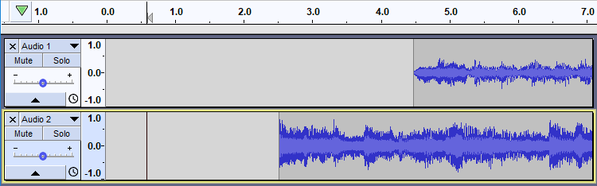
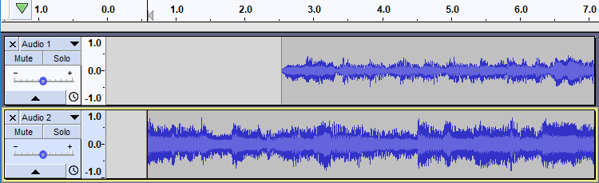
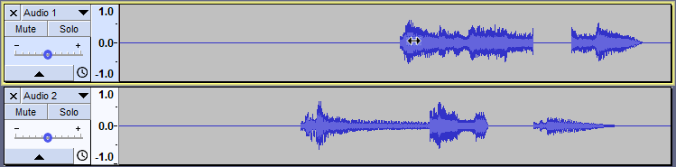
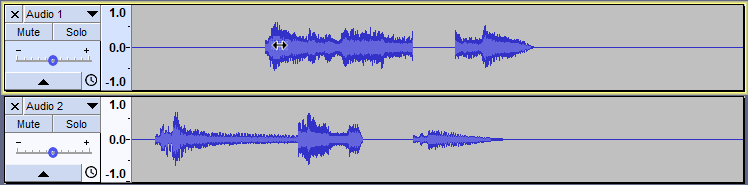

Sync-Locked Track Groups - Time Shifting
Time shifting operations on Sync-Locked Track Groups
- : All of the "Align Tracks" commands (with the exception of the "Align Together" command) will move all tracks in a group by the same amount, even if this means pushing the start(s) of some track(s) before zero on the timeline. By its nature the Align Tracks Together command cannot respect sync-lock since its job is to align the selected tracks so they all start at the same point on the timeline.
- Time Shift Tool: Using the Time Shift tool on any audio track in a Sync-Locked Track Group will move all clips in all audio tracks, and will move any Label Track defining the Group, even if none of the tracks are selected. However a clip will not move unless it overlaps with at least one other clip above or below. If you want non-overlapping clips to move too, select over all clips you want to move then drag from inside the selection.
Example-1: Start to Cursor/Selection Start
Before
- 
- After Tracks > Align Tracks > Start to Cursor/Selection Start
- 
- Result: The selected track is moved so the start of the track aligns with the cursor.
- The Sync-Locked track moves by the same amount.
Example-2: Time Shifting
Before time shifting the tracks with the Time Shift tool
- 
- After time shifting the tracks
- 
- Result: All the tracks move together.
Links
> Forward to: Sync-Locked Track Groups - Time Stretching